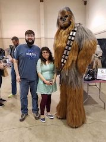
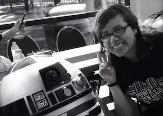

Hello my name is Alex Dominguez and I'm a huge anime and Star Wars fan!
They're many animes I like including: Naruto, Attack on Titans and Sakamoto Desu Ka.
 The following projects is what I made so far in order:
First Program saying "Hello" in HTML
Link of my project click Here
Second program saying goodbye in HTML
Link of my project click Here
My first webpage including my interests in HTML and CSS
Link of my project click Here
Website of my lovely cat Gizmo and sharing her Diva moments. HTML and CSS inspired on a template from CSS Zen Garden
Link of my project click Here
A delicious chocolate cookie recipe in HTML
Link of my project click Here
An HTML and CSS website dedicated to a delicious cupcake recipes and making people hungry
Link of my project click Here
An HTML website about very dull and boring college lecture
Link of my project click Here
A personal blog about myself and my hobbies. Written in HTML/CSS
Link of my project click Here
A website dedicated to one of the best rock bands in the world. Made mostly in CSS and HTML
Link of my project click Here
Website dedicated to Marvel superheroes becoming pets. Written in CSS and HTML
Link of my project click Here
Website about my favorite destinations across the African continent. Written in CSS , HTML and a bit in JavaScript
Link of my project click Here
Sample of an edited wikepedia. Written in HTML
Link of my project click Here
I'm originally from El Salvador and came to Oregon when I was 10 years old.
I got my Associates of Science Trasfer from PCC and worked three years as lab tech for Beaverton School District.
My favorite hobbies include: